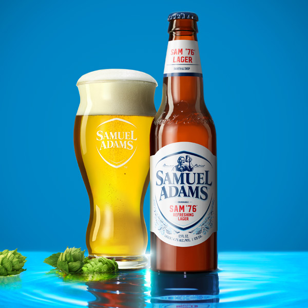

HOME
OUR PICKS
1776 Specialty Brew
Sam Adams Brewing Company
A lightly golden, slightly veiled brew with subtle citrus tropical aroma that is refreshing and smooth.
Located in Boston, MA, Sam Adam's passion for never settling, and brewing quality, flavorful beers started with their founder, Jim Koch. He brewed the first batch of Boston Lager in his kitchen – a recipe that belonged to his great great grandfather that he found in his father’s attic back in the early 1980’s.
Check out their site HERE 